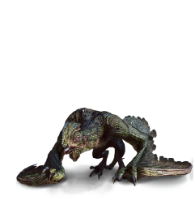
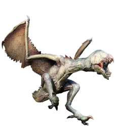
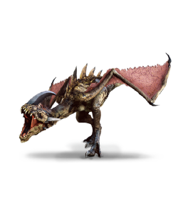
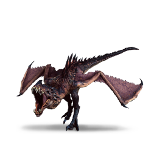

Bazyliszek

Bazyliszek - zwany także Regulusem; jadowity stwór; ma on długi, jaszczurczy ogon, sierpowate szpony, błoniaste skrzydła, a także ptasi dziób.
Oszluzg

Oszluzg - potwór, szarawej barwy, niektóre osiągają wymiary smoka.
Posiada długi dziób i jeśli spojrzeć na niego oczami mieszkańca naszego świata, to wygląda jak szary pterozaur.
Jako swoje kryjówki wykorzystują jaskinie i zagłębienia terenów.
Widłogon

Widłogon - nieduży potwór latający, mający grzbiet pokryty łuską.
Wywerna

Wywerna lub Wiwerna - w Starszej Mowie wyvern, potwór znany z Sagi o Wiedźminie.
Często mylony przez ludzi ze smokiem ze względu na budowę ciała.
Druidzi często oswajają wywerny i używają do swoich potrzeb.